Webエンジニア / プログラマー
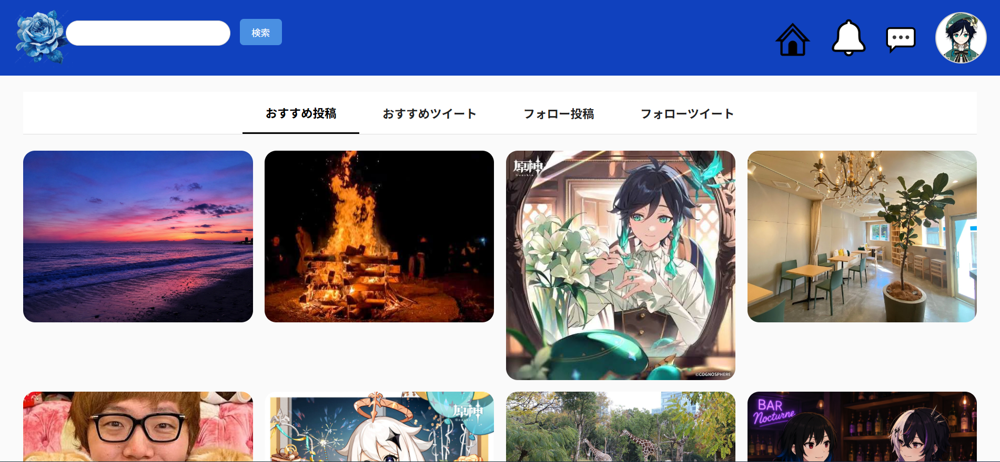
このサイトは、インスタみたいに写真投稿や、Xのように文字や画像を載せてツイートしたり、 相手をフォローしてメッセージを送ったりすることができるブログサイトです。 私は、インスタやX、tiktokなどのSNSを使うのが得意で好きなのですが、もし一体化したら、 結構便利で面白そうだなと思ったので、そこでインスタとXが融合したブログサイトを作ろうと 思い、今回Laravelを使って3か月を要してそれをやってみました。
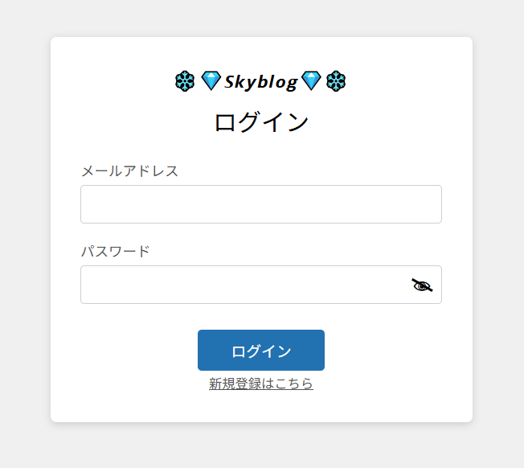
ログイン画面はこのようになっており、メールアドレスとパスワードの入力欄とログインボタン、そして 一番下には新規登録画面があります。
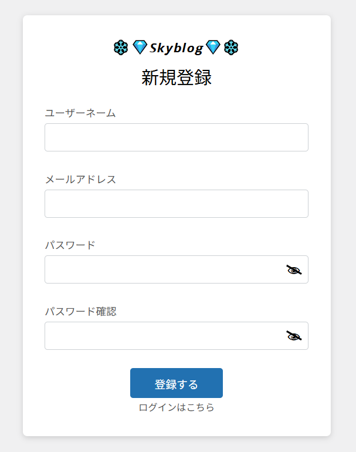
新規登録画面はこちらで、ユーザーネーム、メールアドレス、パスワード、パスワードの確認欄があります。 ここにそれぞれを入力し、最後にパスワードの確認画面で一致すれば、登録完了となり、ログイン画面へ飛ばされる仕組みになっています。 ただし、登録したメールアドレスが被っていた場合、このメールアドレスは登録されていますとエラーメッセージが表示され登録はできないようになっています。
ログインするとホーム画面に移動します。 ホーム画面には上の欄（header）にはユーザーや、投稿、ツイートの検索欄、 ホーム画面へのボタン（家のマークか薔薇の画像を押す）と通知、メッセージ、 プロフィール画面へ行くためのユーザーのアイコン写真のボタンがあります。 そして下の方には「おすすめ投稿」「おすすめツイート」「フォロー投稿」「フォローツイート」の4つのタブがあります。 ここではまず、おすすめ投稿とおすすめツイートについて説明します。
おすすめ投稿では、ランダムで投稿写真が表示されるようになっており、
見たい投稿の写真を押すと投稿の詳細が表示される仕組みになっています。
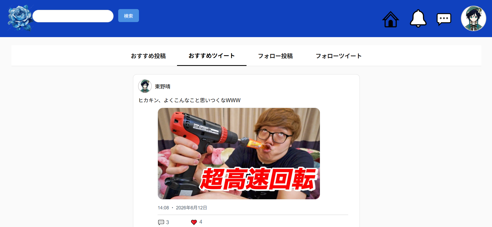
おすすめツイートでは、こちらもランダムで
ツイートされた記事が
一覧で表示されるようになっており,
いいね💗かコメント💭
以外のところを押したら詳細が見れるようになっています。
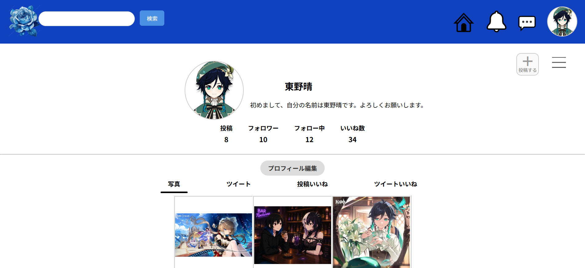
上の欄のアイコンを押すと、こちらのプロフィール画面に飛ぶ仕組みになっています。ここでは、 名前、自己紹介文、プロフィールの編集、写真の投稿、フォロー、フォロワー、いいねの数が表示される ようになっています。下の方には、写真、ツイート、投稿いいね、ツイートいいねがあり、文字のところ押すと、 その欄へ行けるようになっています。
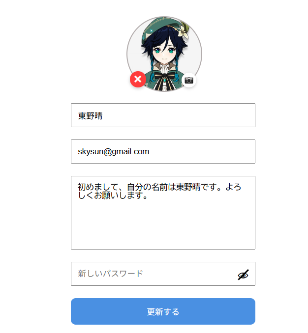
プロフィールの編集を押すと、こちらの編集画面に移ります。ここでは、アイコンの写真、 名前、Gmail、自己紹介文、パスワードの変更ができます。この中で、アイコン、説明文、自己紹介文、 は空白でも通りますが、名前、Gmailが空白、もしくはGmailのメールアドレスが他のユーザーと被っている と変更はできないです。
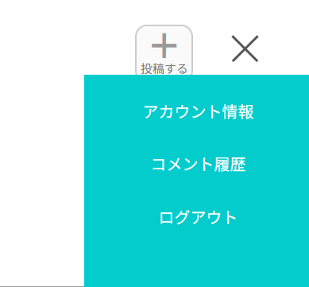
右上のハンバーガーメニューでは、自分のアカウントの詳細情報を見ることができます。 アカウント情報では、自分の名前、メールアドレス、アカウントの作成日時を見ることが できます。コメント履歴では、自分がコメントした投稿やツイートを見ることができるようになっています。 そして、一番下にログアウトのボタンがあります。
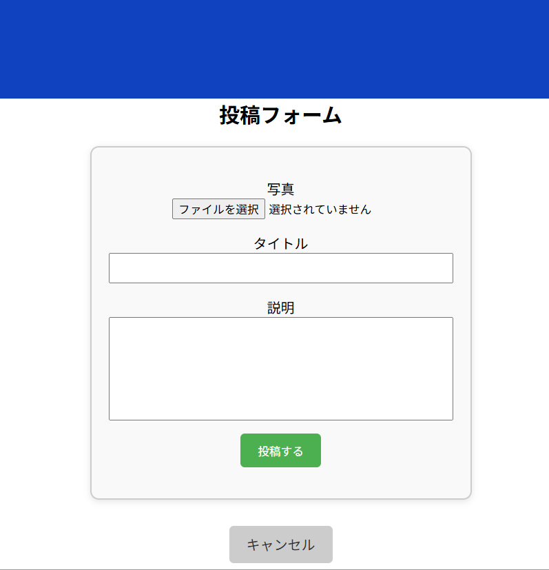
プロフィール画面の右上の、「投稿する」を押すと、投稿フォームへ画面が変わり、ここから 写真を投稿をすることができます。ファイルから画像を選択し、タイトルを書いて、最後に説明文（任意） を書いて投稿するを押すと、写真投稿が完了です。
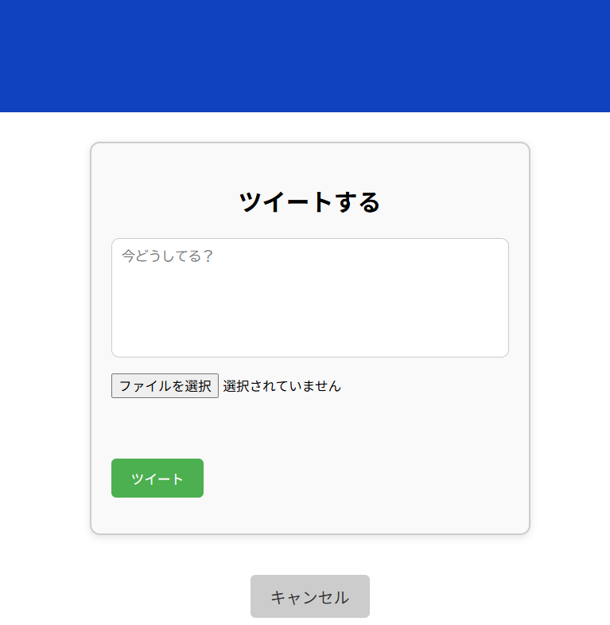
プロフィールでツイート欄にすると、投稿するのところがツイートするになり、そこからツイートできるように なっています。ここでは説明文を書いて、写真（任意）を添付してツイートすることができます。
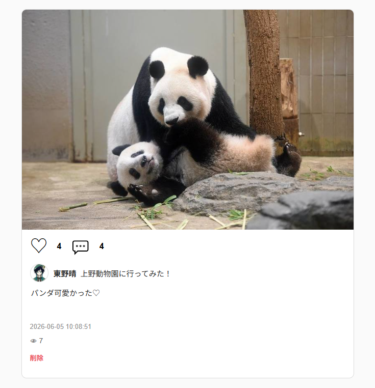
プロフィール画面の投稿の一覧の写真を押すと、投稿の詳細に移るようになっており、こちらの詳細画面が表示されます。ここではまず投稿の写真が表示されており、 その下に、いいね💗と、コメント💬欄、さらに下に、アイコン、名前、タイトル、説明文、 が表示されるところがあります。それからその下には、投稿した日時と、表示回数、削除ボタン（投稿主のみ） があります。
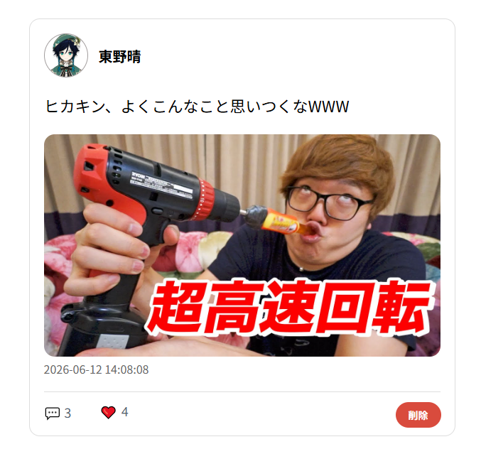
ツイートの一覧で、💬や💗以外のところを押すと、ツイートの詳細画面に移るようになっています。 こちらは、上の方にアイコンと名前があり、下にツイートの内容の文字や写真 が表示され、下にコメント💬欄といいね💗、そして右に削除ボタン（ツイート主のみ）があります。
headerの💬のところを押すと、こちらのメッセージ一覧のところに移るようになっています ここでは、一覧の説明と、チャットルームの説明をしていこうと思います。
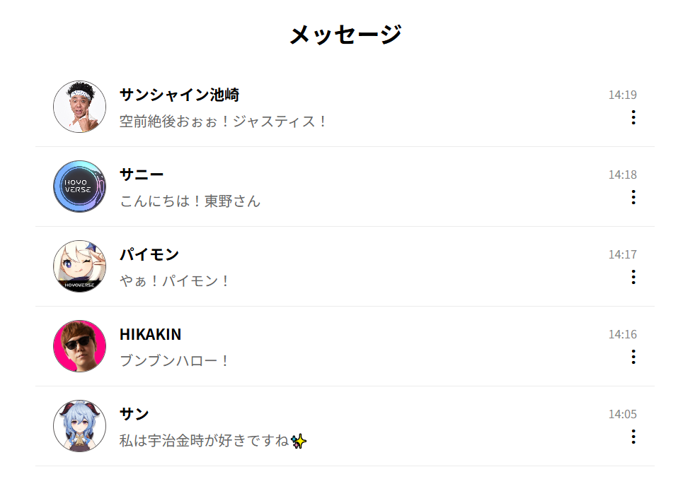
メッセージ一覧は上記のようになっており、上から直近でメッセージを送った人順に表示されるようになっています。 右には送った時間、：の部分を押すと削除が表示されるようになっています。
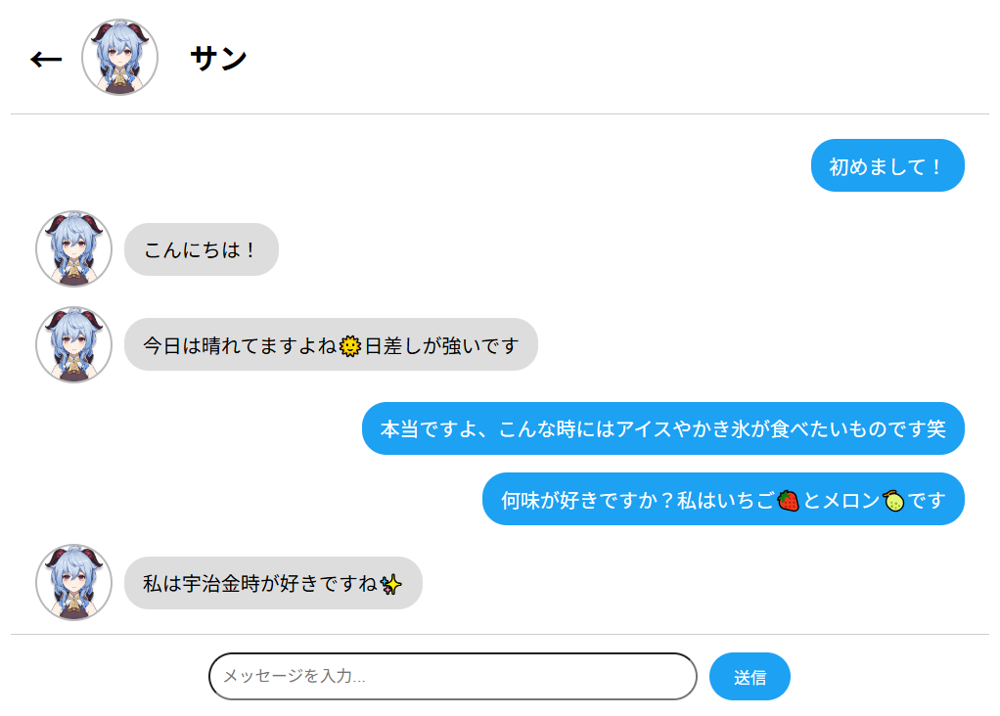
チャットルームはこちらになっており、LINE、インスタやXのDMと同じ構図になっています。右に自分のメッセージ、 左に相手のメッセージとなっております。
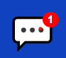
尚、もしメッセージが来るとこのように💬のところに赤い●と通知の数が表示されるようになっています。 チャットルームをルームを開くとこの表示が消える仕組みなっています。
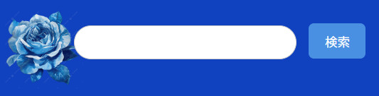
続いて、検索機能について説明していこうと思います。 ここでは、ユーザー名、投稿やツイートのタイトルや説明の文字が 1文字でも引っかかると表示されるようになっています。
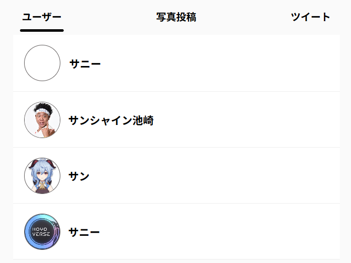
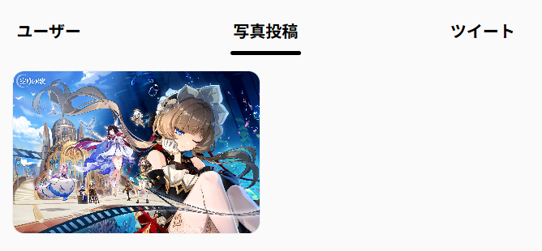
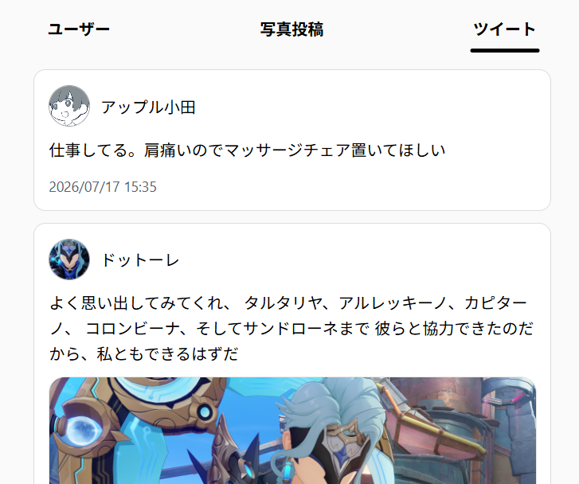
例えば、サと一文字を検索すると、このようにその文字が入ったユーザー、投稿、ツイートが 検出される仕組みとなっています。
お次は通知機能について説明していきます。🔔のマークを押すと、このように通知の一覧が 表示されるようになっています。ここでフォローされたり、投稿やツイートでいいねやコメントしたものが来るように なっています。また、不適切な投稿やツイートだった場合、削除されることがあった時もここに通知が来るようになっています。 （※詳しい内容はこのあとの管理者機能で説明いたします。）
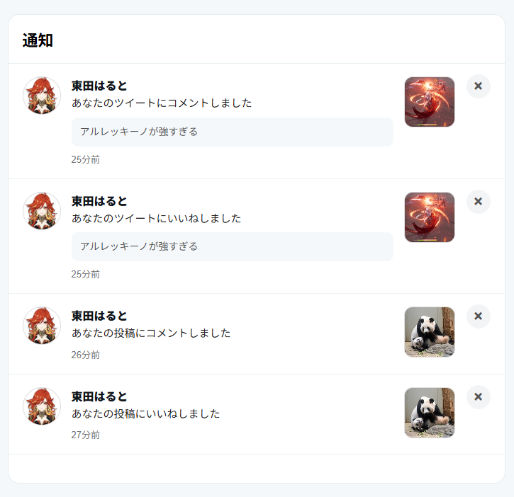
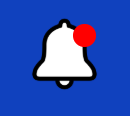
通知機能も、検知されるとこのように🔔のマークに赤い●が付くようになっています。 こちらは、ページを開くと消えるようになっています。
ここでは、管理者機能機能について説明していきます。管理者のアカウントでは、 一般ユーザーではできないことがいくつかあります。
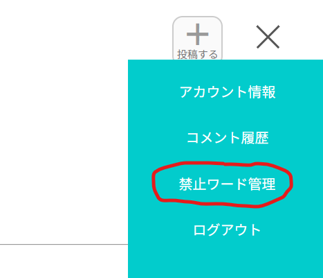
管理者のアカウントでは、プロフィールのメニューのところに 禁止ワードを設定するところがあります。
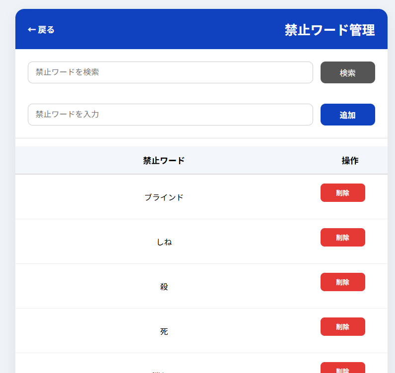
するとこちらの画面に移って、ここで禁止ワードを設定することができます。
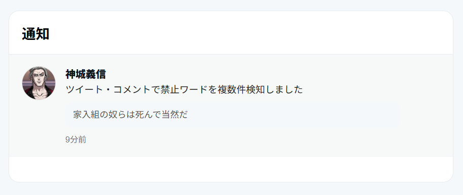
禁止ワードが投稿のタイトル、ツイート文、そして他ユーザーのコメントで、 5語以上あった場合、管理者アカウントの通知から検知されるようになっています。
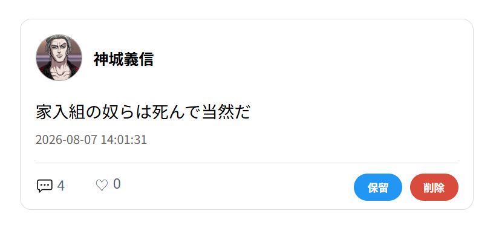
通知から、検知された投稿、ツイートを開くとこのように、削除ボタンと保留ボタンが あります。削除ボタンを押すと、その投稿、ツイートを強制的にこちらから消すことが可能となります。 一方、保留ボタン（※コメントのみ悪いことが書いてあり、ツイート自体は悪質が低い時ように）を押すとこの通知は削除され、また禁止ワードがそこから＋5以上増えると再通知される 仕組みとなっています。
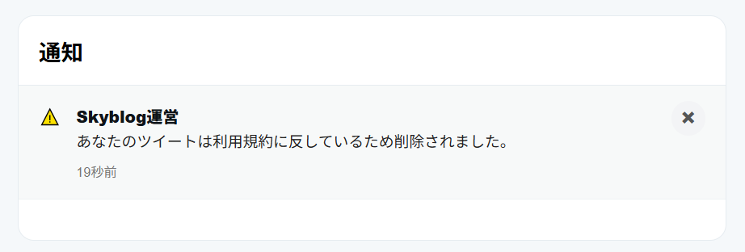
削除されると、その投稿、ツイートしたユーザーのところに運営の通知が来る仕組みとなっています。
最後に、フォローしたユーザーの投稿とツイートの更新について説明します。 トップ画面のフォロー投稿と、フォローツイートがフォローしたユーザーの 更新が見れるところになっています。
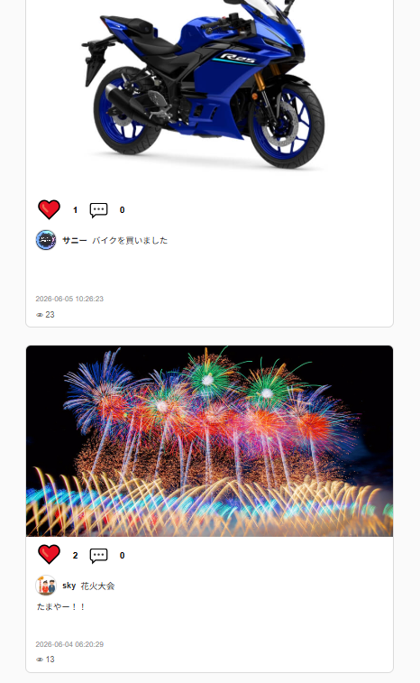
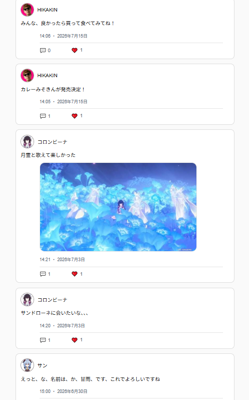
こうように、投稿もツイートも両方、フォローしたユーザーの直近の 投稿した写真や、ツイートした記事を見ることができるようになっています。